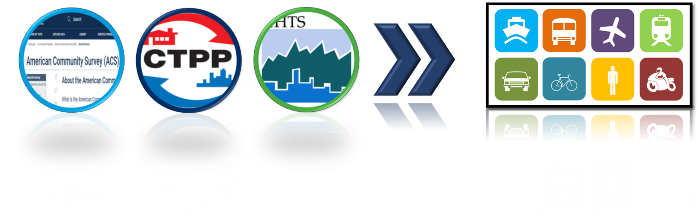

GENESIS
Trip Generation Model using ACS, CTPP and NHTS data (GENESIS), provides a state-of-the-art travel pattern assessment and analysis tool to planners and stakeholders.
Concept of GENESIS
This tool offers a proof-of-concept trip production using American community survey (ACS), CTPP and NHTS. ACS provides quite accurate and microscale trip production information for journey-to-work level, but they do not provide trip information for other trip purposes, such as home-based other (HBO), non-home-based (NHB), home-based shopping (HBSHOP) and home-based social/recreation trips (HBSOCREC)....
